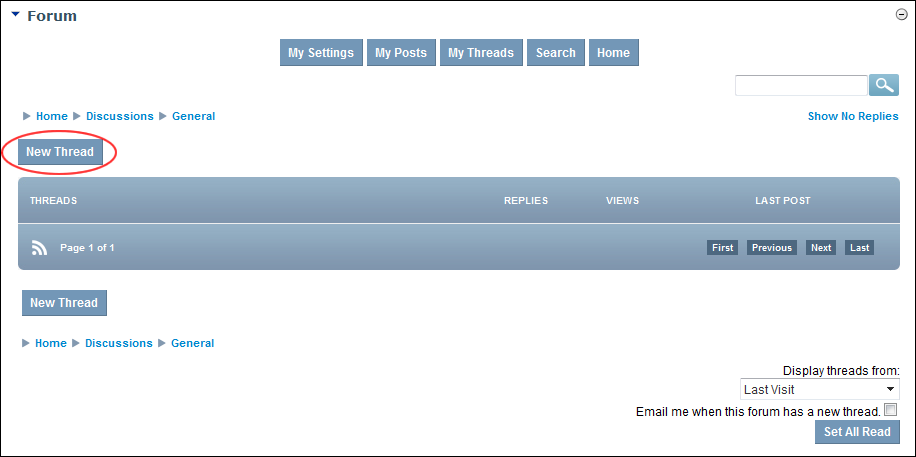
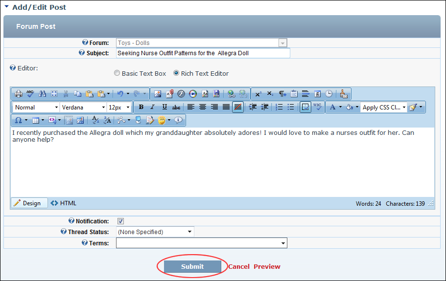

Adding a Forum Post - Basic
How to add an entry (commonly known as a post) to a forum in the Forums module. This tutorial covers the basic options which are available when the default settings are applied to the Forum module.
- Navigate to the forum where you want to add the new post. See "Navigating to Forums & Forum Groups"
- Click the New Thread link.

- In the Subject text box, enter the subject of this post. This becomes the title of this post as it appears in the forum, therefore choose a subject that best describes the purpose and content of the post.
- In the Editor, enter the body of the post. See "About the Editor"
- Optional. At Notification, if you wish to receive an email when the post has a response.
- At Thread Status, select one of the following options:
- (None Specified): Select for no status to be displayed. This is the default option.
- Unresolved: Select if the post asks a question requiring resolution.
- Resolved: Select if the post is resolved or resolves a question. Typically this option is only selected when an existing post is answered.
- Informative: Select if the post provides information.
- Optional. At Terms, select one or more terms associated with this thread.
- Optional. Click the Preview link to preview the post. If you wish to edit it further, click the Return To Edit link.

- Click the Submit link. If the post does not require moderation it is immediately added to the forum and is now displayed to you. If the post requires moderation a message is displayed explaining the moderation process. In this case, click the Return To Forum link.

The Newly Added Post